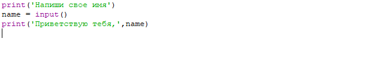
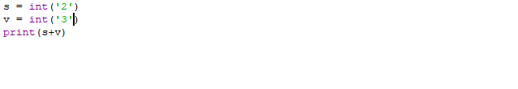
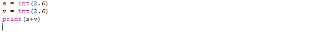
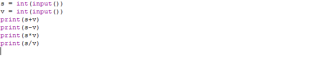
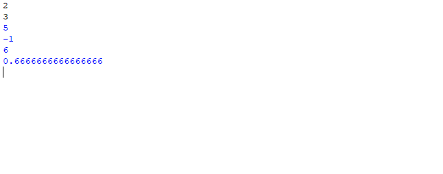

Вы никогда не думали о том, как вам, пользователям, дается такая уникальная возможность,
как вводить данные прямиком с клавиатуры? Все это благодаря функции ввода - input. В данном уроке
мы научимся применять данную функцию.

Попробуйте переписать данную программу. Кстати, чтобы какая-либо переменная выводилась ее
нужно в print писать после запятой, когда напишите то, что нужно.
Как работает данная программа? Для начала она запрашивает у вас ввод имени. Затем, вы передаете свои данные
в переменную name, которая сохраняет эту информацию и передает на вывод. Можете попробовать совершенно рандомные наборы символов, роли
это не играет.
Input - функция для ввода данных с клавиатуры, которая должна храниться в какой-либо переменной.
Функция int
Эта же функция позволяет хранить целые числа в Python. Способна хранить как положительные, так и отрицательные числа, при
этом сколь угодно большие. Int, в целом, является функцией преобразования, что конкретно доказывает данный пример:

Будучи строковыми типами данных с помощью int они преобразовались в обычные целые числа, после чего результат
будет уже не 23(объединение строк), а логичным и правильным ответом - 5.

Имея понимание о том, что int является функцией преобразования можно догадаться, что результатом
данной операции будет число 4, ибо эта же функция из вещественных чисел перевела в обычные,
нормальные целые числа.
В купе же с input можно самостоятельно вводить различные цифры и производить с ними математические операции.
Пример:

Результат:

Для начала мы подаем значения каждой переменной(s,v), после чего программа поэтапно проводит различные операции.